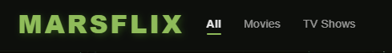

Retro Product Advert
Exploration of mid-century aesthetics applied to modern web standards, focusing on color theory and grid layouts.
An archive of specialized projects focusing on responsive architecture and interactive UI.
Exploration of mid-century aesthetics applied to modern web standards, focusing on color theory and grid layouts.

A high-fidelity prototype for a family-owned pizzeria featuring optimized image assets and menu navigation.

Technical exercise in complex CSS Grid positioning to replicate high-density print media in a browser environment.

Dynamic movie database application utilizing TMDB API for real-time data fetching and state management.